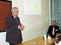

С 22 по 25 марта 2004 года в г. Санкт-Петербурге на базе Отдела молекулярной микробиологии НИИ экспериментальной медицины РАМН, который является Национальным Центром Всемирной организации здравоохранения по стрептококкам, состоялся научно-практический семинар с международным участием «Особенности выделения, идентификации и определения чувствительности пиогенных стрептококков».
С 22 по 25 марта 2004 года в г. Санкт-Петербурге на базе Отдела молекулярной микробиологии НИИ экспериментальной медицины РАМН (НИИЭМ РАМН), который является Национальным Центром Всемирной организации здравоохранения по стрептококкам, состоялся научно-практический семинар с международным участием «Особенности выделения, идентификации и определения чувствительности пиогенных стрептококков». Организаторами семинара выступили НИИЭМ РАМН, Межрегиональная ассоциация по клинической микробиологии и антимикробной химиотерапии (МАКМАХ), НИИ антимикробной химиотерапии Смоленской государственной медицинской академии (НИИАХ СГМА), Институт ревматологии РАМН, Сотрудничающий центр ВОЗ по стрептококкам (Миннесота, США), помощь в организации семинара оказали Европейское общество по клинической микробиологии и инфекционным болезням (ESCMID) и Американское общество по микробиологии (ASM). Семинар прошёл при поддержке компаний bioMeriuex, BioRad, Sarstedt, HiMedia, Аквапаст, НИЦФ.
В работе семинара приняли участие 32 врача-бактериолога, из которых 23 - из центров госсанэпиднадзора и бактериологических лабораторий лечебно-профилактических учреждений г. Санкт-Петербурга и 9 - из Владимира, Калуги, Липецка, Твери, Ярославля и Челябинска.
Утренняя сессия семинара была лекционной, на которой освещались вопросы, эпидемиологии и современного клинического значения стрептококковой инфекции, классификации, микробиологического исследования материала, идентификации и определения чувствительности пиогенных стрептококков. С лекциями на семинаре выступили руководитель Сотрудничающего центра ВОЗ по стрептококкам, профессор Э. Каплан, научный сотрудник университета Миннесоты Д. Джонсон, старшие научные сотрудники НИИ экспериментальной медицины РАМН Л.А. Бурова, А.Н. Суворов, зам. директора НИИАХ Р.С. Козлов.
Дневная сессия семинара была посвящена практической работе в лабораториях отдела молекулярной биологии НИИ экспериментальной медицины РАМН. Во время практических занятий участники имели возможность не только самостоятельно изучить этапы работы с клиническим материалом, но и подробно рассмотреть методики приготовления селективных питательных сред для выделения стрептококков и сред для определения чувствительности, а также методы экстракции группового антигена, группирование стрептококков в различных тестах, определение чувствительности пиогенных стрептококков к антибиотикам диско-диффузионным методом и правила учёта результатов определения чувствительности.
Организаторы убеждены, что знания, полученные участниками семинара, будут способствовать улучшению диагностики и лечению стрептококковых инфекций в Северо-западном регионе России, что, в свою очередь, будет способствовать снижению заболеваемости стрептококковыми инфекциями и ревматической лихорадкой.
Особую признательность за подготовку и проведение семинара выражаем руководителю Отдела молекулярной микробиологии НИИЭМ РАМН, академику РАМН А.А. Тотоляну, всему персоналу Отдела, а также Комитету здравоохранения Администрации г. Санкт-Петербурга.
Фотографии
(выберите картинку для просмотра увеличенного изображения)
|  | Лекцию читает академик РАМН, руководитель Отдела молекулярной микробиологии А.А. Тотолян | | | Лекцию читает руководитель Сотрудничающего центра ВОЗ по стрептококкам, профессор Университета Миннесоты Э. Каплан |
| Лекцию читает сотрудник Отдела молекулярной микробиологии А.Н. Суворов | | | Вручение сертификатов участникам семинара |